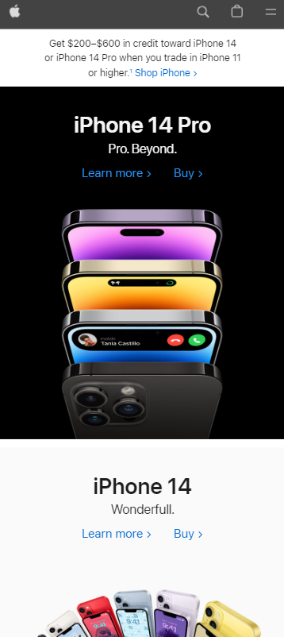
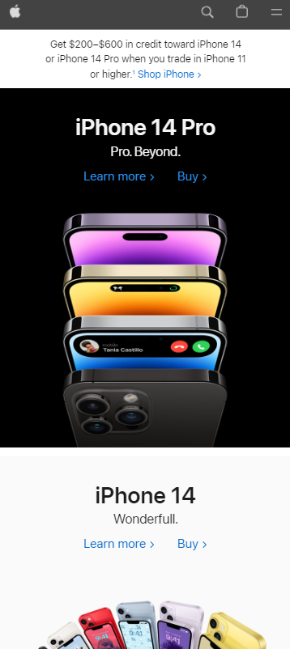
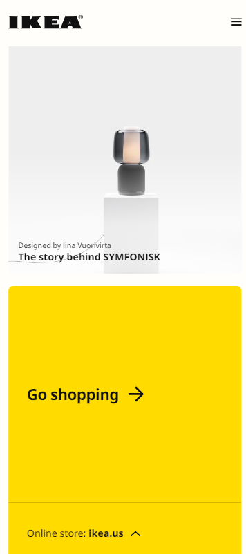

Visual Hierarchy
Company Name: Apple
Company Website: link
The black on white section near the top of the page highlighted with vibrant colors draws the eye there and says, "This is important!" by making it stand out.
Company Name: Apple
Company Website: link
The black on white section near the top of the page highlighted with vibrant colors draws the eye there and says, "This is important!" by making it stand out.
Company Name: IKEA
Company Website: link
The liberal use of white (and yellow) space here directs the eyes to what matters: where you are, how to shop, and what's new. Everything is easy to find, neat, and simplistic, just like IKEA's business model and interior designs.
Company Name: YouTube
Company Website: link
YouTube has many menu options to help users filter through content, and this is displayed on the desktop version on the left. In the mobile version, they trim away all menues to present only a few choices: search, 4 options at the bottom, your account, and a side-scoll menu if you want to browse categories. This limited amount of choices is what using Hick's Law is all about.